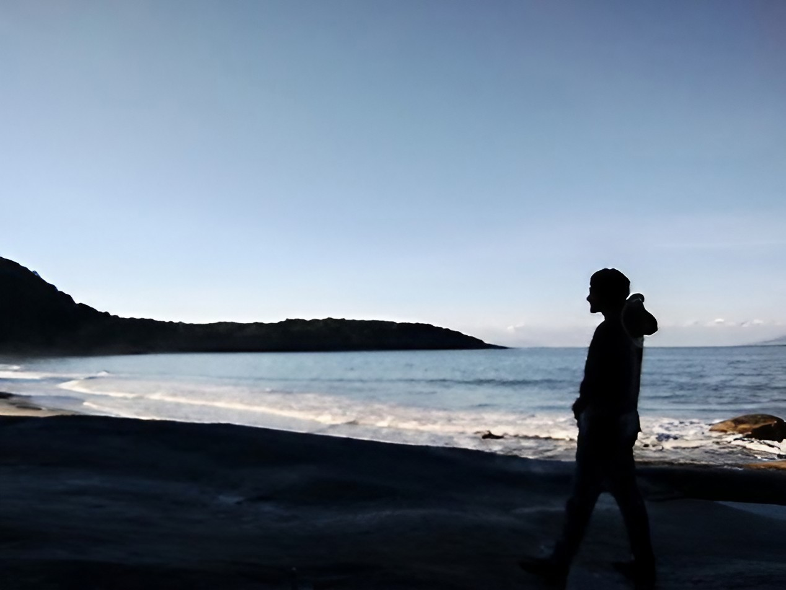

Sobre mim

Me chamo Guilherme e tenho 24 anos. Acredito que minha motivação em explorar a área da tecnologia se dá pelo meu gosto em resolver problemas. Recentemente me interessei muito pela parte não-técnica da área, trabalhando principalmente minhas soft skills. Passei a ter grande curiosidade por regras de negócio e em como gerir um projeto conciso. Além disso, tenho me dedicado principalmente nos estudos sobre front-end.
Sou extremamente paciente, gosto muito de ler e também de acampar. Embora goste das telas, prefiro passar meu tempo livre longe delas me dedicando aos meus passatempos. Gosto de desenhar, jogar sudoku, escrever e tocar violão.